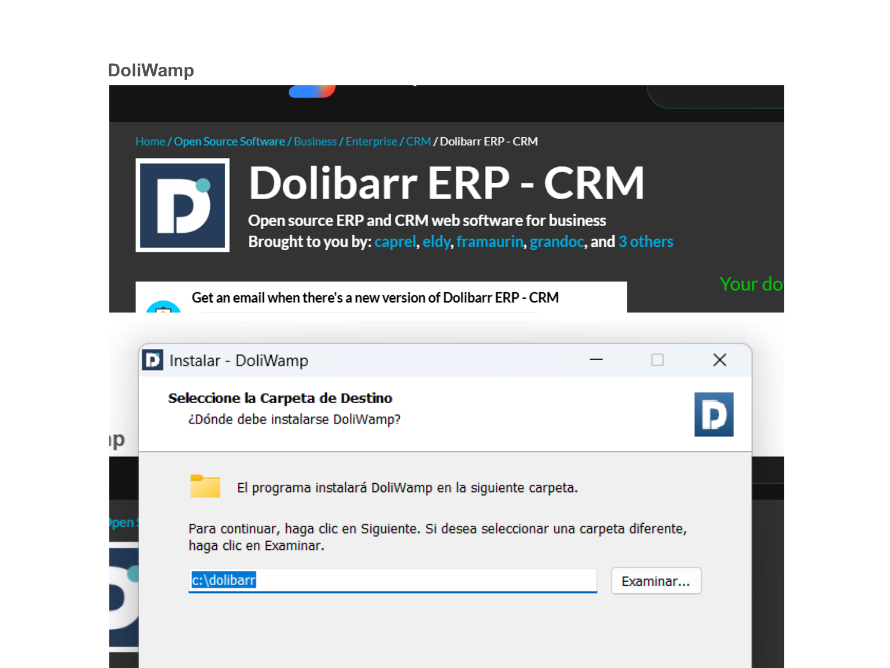
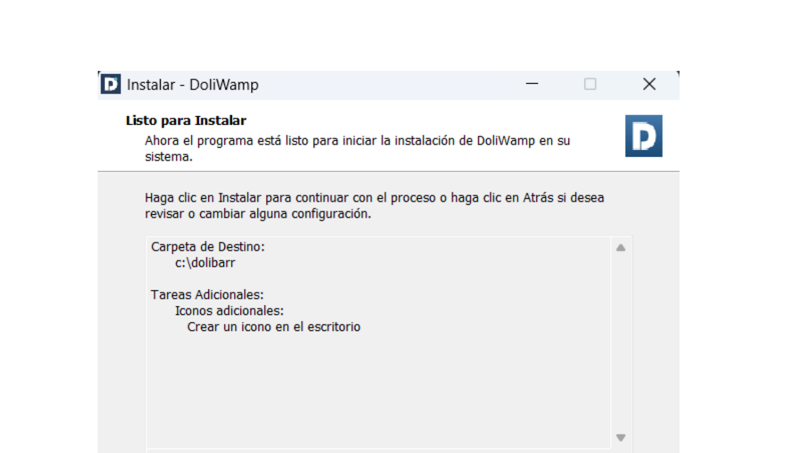
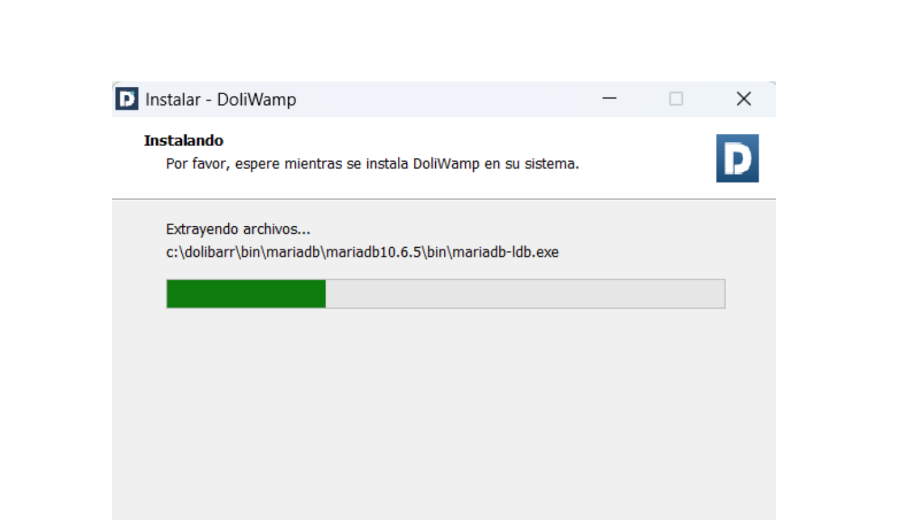
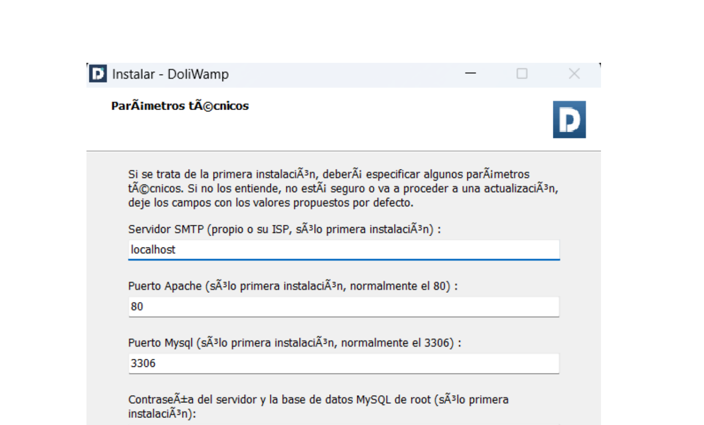
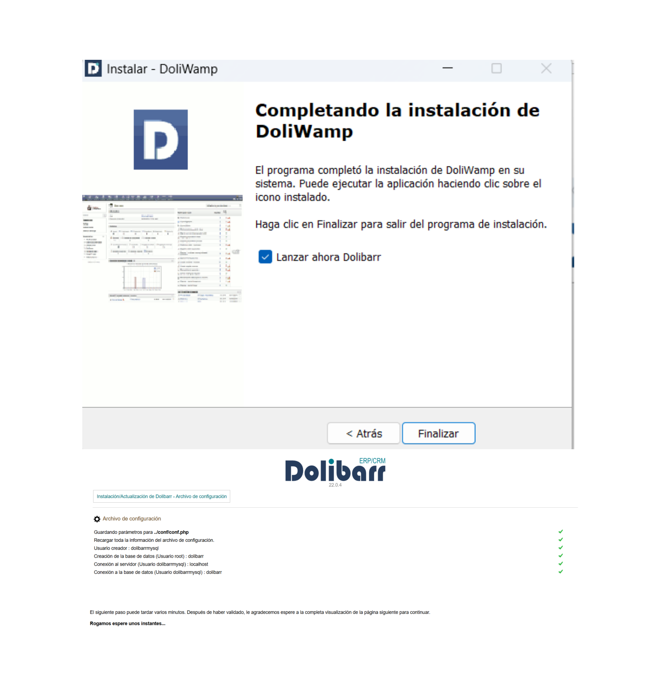
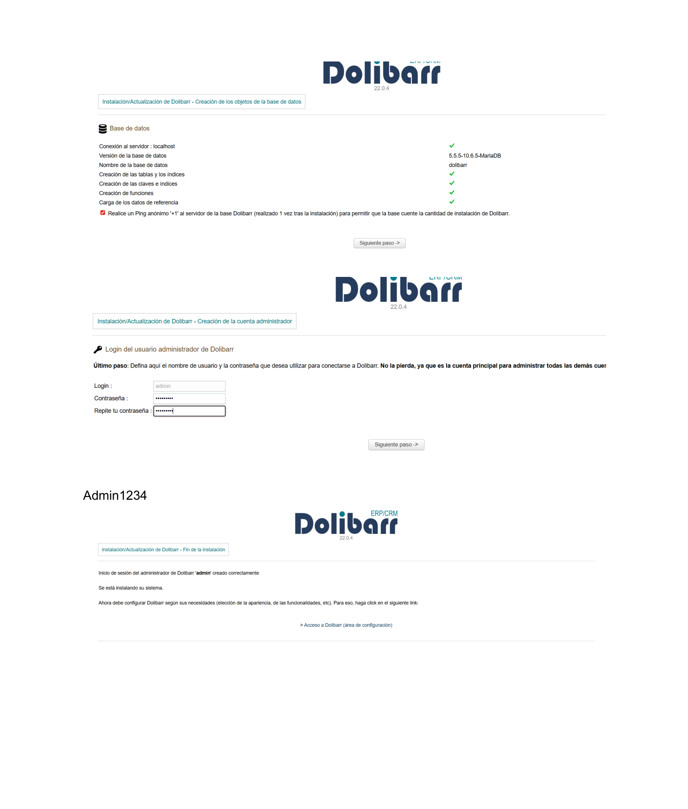

Proceso completo de instalación del ERP/CRM Dolibarr en Windows mediante DoliWamp
Dolibarr ERP/CRM es un sistema de gestión empresarial de código abierto orientado a pequeñas y medianas empresas. Incluye módulos de gestión de clientes, proveedores, facturación, inventario, contabilidad, recursos humanos y mucho más.
Para instalarlo fácilmente en Windows usamos DoliWamp, un paquete todo-en-uno que incluye Apache, MariaDB y Dolibarr preconfigurados.
| Componente | Requerimiento |
|---|---|
| Sistema operativo | Windows 10 / 11 (64 bits) |
| Espacio en disco | Mínimo 600 MB libres |
| RAM | 2 GB mínimo (recomendado 4 GB) |
| Navegador | Chrome, Firefox o Edge actualizados |
| Permisos | Administrador del sistema |
Accedemos a SourceForge y descargamos el instalador de DoliWamp (incluye Dolibarr ERP/CRM). En la misma página podemos ver la descripción del proyecto y los colaboradores del software libre.
El instalador ocupa unos 600 MB y se descarga como un archivo .exe. Al ejecutarlo, lo primero que pide es elegir la carpeta de instalación (por defecto c:\dolibarr).

El asistente muestra un resumen con la carpeta de destino elegida (c:\dolibarr) y las tareas adicionales, como crear un icono en el escritorio. Hacemos clic en Instalar para continuar.

El instalador extrae todos los archivos necesarios: Apache, MariaDB (base de datos) y Dolibarr. La barra de progreso muestra el avance. Este proceso puede tardar varios minutos dependiendo del ordenador.

Al finalizar la extracción, el instalador pide los parámetros técnicos del servidor. En una instalación nueva se pueden dejar los valores por defecto:
localhost803306
El instalador muestra la pantalla de "Completando la instalación de DoliWamp" y lanza automáticamente el navegador con el asistente web de Dolibarr. Desde ahí se configura la base de datos:
localhostdolibarrTras la creación de la base de datos, se define el usuario administrador: login admin y una contraseña segura. Después de confirmar, Dolibarr indica que el administrador ha sido creado correctamente y ofrece el enlace para acceder al área de configuración.


Desde SourceForge, descargar el instalador .exe de DoliWamp (≈600 MB).
Seleccionar la carpeta de instalación (por defecto c:\dolibarr) y pulsar Instalar.
El instalador extrae Apache, MariaDB y Dolibarr. Puede tardar varios minutos.
Dejar los valores por defecto (localhost, puerto 80, puerto 3306).
El navegador abre el asistente web. Crear la BBDD y definir el usuario admin con contraseña segura.
Abrir http://localhost/dolibarr e iniciar sesión con el usuario admin creado.